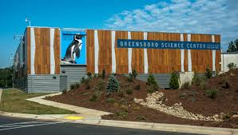
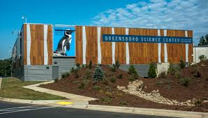

Greensboro Science Center
Click To Learn More

Tanger Family Bicentennial Garden
Click To Learn More
Greensboro is known for its pivotal role in the Civil Rights Movement and its beautiful parks and gardens.
296,710
1808
North Central
Urban
$52,638
Greensboro Science Center
Click To Learn More
Tanger Family Bicentennial Garden
Click To Learn More